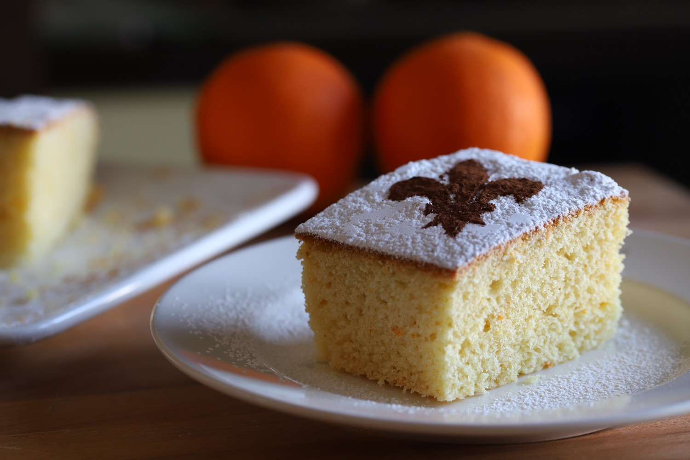

Schacciata alla Fiorentina

Description
The Schiacciata Fiorentina is a soft and delicate cake made with simple ingredients
Ingredients
- Sugar (225 g)
- 00 flour (300 g)
- Whole milk at room temperature (90 g)
- Extra virgin olive oil (50 g)
- Eggs (about 3)
- Orange (1)
- Baking powder (16 g)
- Vanilla pod (1)
- Powdered sugar (to taste)
- Bitter cocoa powder (to taste)
Steps
- Start by grating the orange zest into a small bowl and then squeeze the juice out of it, filter it and set it aside
- Break the eggs into a bowl and add the sugar with the seeds of a vanilla bean: Using a mixer, whip everything together until you get a light and frothy mixture
- At this point can you add the grated orange zest and the oil in a trickle
- Once the oil has been completely absorbed, first pour in the orange juice, always in a thin stream
- Once absorbed, also add the milk at room temperature in a trickle
- At this point, also incorporate the flour, previously sifted, adding a spoonful at a time and letting it absorb before adding the next spoonful
- Once the flour is finished, add the yeast too and work for another 2-3 minutes until you obtain a smooth and homogeneous mixture which you will then pour into a 24X17 cm mould, previously buttered and floured
- Cook in a static oven preheated to 180° for 50 minutes (for this preparation, the fan-assisted mode is not recommended)
- Once cooked, take the schiacciata out of the oven and let it cool before unmolding it
- Place it on a serving tray and sprinkle the entire surface with icing sugar
- Use a stencil shaped as a lily (the symbol of Florence), cut out the black part, place the sheet in the centre of the cake and sprinkle with bitter cocoa
- Serve your Schiacciata Forentina